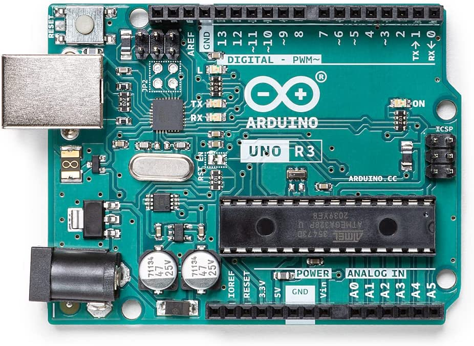
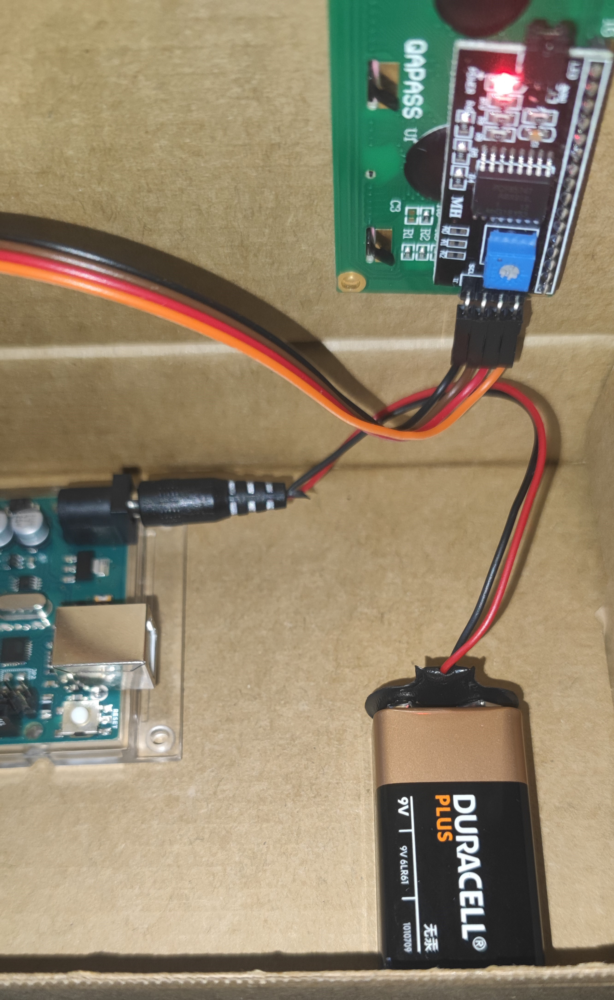

Materials
-
Placa Arduino Uno Rev3
 -
Bateriess 9v
-
Cable connector bateria 9v
-
Cable connector USB 2.0

-
Módul I2C Arduino

-
Jumperwires

-
Keypad 4x4
-
LCD 2x16
Muntatge
-
Agafarem la caixa de cartró on posarem tots els components.

-
Ara podem continuar posant la placa Arduino on toca.

-
A continuació farem un forat a la caixa on anirà el nostre display lcd 2x16.

-
Posarem el display dins el forat y conectarem, GND (I2C) amb GND (arduino),
VCC (I2C) amb 5V (arduino), SDA (I2C) amb A4 (arduino) i SCL (I2C) amb A5 (arduino).

-
Conectarem el keypad 4x4 al arduino als següents pins, 0-7.


-
El keypad 4x4 ha de quedar de la manera següent.
L'enganxaré per què es quedi fixe en aquesta posició.

-
Connectarem el cable connector de la pila amb la batería de 9V.

-
Ara podem connectar el cable connector de la pila amb el connector jack de l'arduino.
 -
Aixì quedaríen les conexions. Ara ja tenim la calculadora funcionant.

Codi Arduino
#include <Key.h> // utilizada para trabajar con keypad
#include <Keypad.h> // permite interactuar con un teclado matricial
#include <Wire.h> // necesario para la comunicación I2c
#include <hd44780.h> // soporte para pantallas LCD basadas en el controlador hd44780
#include <hd44780ioClass/hd44780_I2Cexp.h> // extensión de la librería anterior para utilizar pantallas LCD con interfaz I2C
// Inicialización LCD I2C
hd44780_I2Cexp lcd; // Se declara objeto LCD de la clase hd44780_I2Cexp para controlar display mediante I2C
// Geometría LCD
const int LCD_COLS = 16; // 16 columnas
const int LCD_ROWS = 2; // 2 filas
double num1, num2 ; // variables para almacenar los número utilizados en las operaciones
double total; // variables para almacenar el resultado de las operaciones
char operation, button; // variable para almacenar la operación seleccionada y el botón seleccionado
const byte ROWS = 4; // definimos 4 filas
const byte COLS = 5; // definimos 5 columnas
// Definimos el mapa de teclas
char keys[ROWS][COLS] = { // matriz que define las teclas disponibles en el keypad
{'1', '2', '3', '+'},
{'4', '5', '6', '-'},
{'7', '8', '9', '*'},
{'=', '0', '%', '/'}
};
byte rowPins[ROWS] = { 7, 6, 5, 4 };// Conecta el keypad ROW0, ROW1, ROW2 y ROW3 a estos pines Arduino
byte colPins[COLS] = { 3, 2, 1, 0 }; // Conecte el teclado COL0, COL1 y COL2 a estos pines Arduino
Keypad kpd = Keypad( makeKeymap(keys), rowPins, colPins, ROWS, COLS ); // Crear el keypad para controlar el teclado con la configuración anterior
void domath() // función para realizar operación seleccionada por el usuario y mostrar resultado en display
{
switch (operation)
{
case '+': // Suma
total = num1 + num2;
break;
case '-': // Resta
total = num1 - num2;
break;
case '/': // División.
total = num1 / num2;
break;
case '*': // Multiplicación
total = num1 * num2;
break;
case '%': // Operación Módulo
total = (int)num1 % (int)num2;
break;
}
lcd.setCursor(0, 1);
lcd.print('=');
lcd.setCursor(1, 1);
lcd.print(total);
}
void setup() { // función para inicializar el programa
lcd.init(); // se verifica que la inicialización ha sido exitosa
lcd.backlight(); // y se muestra un mensaje de bienvenida en el display
lcd.setCursor(3, 0);
lcd.print("Calculator");
lcd.setCursor(5, 1);
lcd.print("Davide");
delay(2500); // pausa de 2.5 segundos
lcd.clear(); // limpiar la pantalla
}
void loop() // esta función contiene el bucle principal del programa
{
while (1) // Primer bucle, se encarga de capturar el primer número ingresado y mostrarlo por el display LCD
{
button = kpd.getKey(); // se espera a que el usuario seleccione una operación matemática
if (button >= '0' && button <= '9') // Si el usuario presionó un valor numérico, 1 carácter a la vez.
{
lcd.clear();
num1 = num1 * 10 + (button - '0'); // Composición del primer operando
lcd.setCursor(0, 0); // Seleccione el cursor en la primera fila en LCD
lcd.print(num1); // Imprimir número num1
}
// Operación de entrada
if (num1 != 0 && (button == '+' || button == '-' || button == '*' || button == '/' || button == '%'))
{
operation = button; // operación recuerda qué operación matemática quiere el usuario en los números
lcd.setCursor(0, 1); // posiciona el cursor en la 2 fila
lcd.print(operation); // imprime en pantalla la operación
break;
}
}
while (1) // esta función contiene el segundo bucle,
{
button = kpd.getKey(); // Lectura de botón
if (button >= '0' && button <= '9') // Obteniendo caracteres del teclado para el segundo número
{
num2 = num2 * 10 + (button - '0'); //Composición de la segunda operación
lcd.setCursor(1, 1); // selecciona la segunda fila, segunda columna en el LCD
lcd.print(num2); // imprime en pantalla la operación 2
}
if (button == '=' && num2 != 0) //Hacer el cálculo si se presiona "="
{
domath(); // se llama a la función domath para realizar el cálculo y mostrar el resultado en el display
break;
}
}
while (1) // limpia la pantalla para la siguiente operación
{
// se espera a que presione la tecla "=" nuevamente para limpiar la pantalla y reinciar el programa.
button = kpd.getKey();
if (button == '=')
{
lcd.clear();
lcd.setCursor(0, 0);
num1 = 0;
num2 = 0;
total = 0;
operation = 0;
break;
}
}
}